# library(readxl)
library(tidyverse)
library(quanteda)
library(quanteda.textstats)
library(quanteda.textplots)
library(RColorBrewer)
library(topicmodels)
# library(ggwordcloud)
library(wordcloud)6 Topic Analysis
6.1 Introduction
On va maintenant s’intéresser à la détection et à l’analyse de topics. Il existe de nombreux algorithmes pour cela. On va commencer avec le modèle original : le modèle LDA, pour Latent Dirichlet Allocation. Puis on s’intéressera à un de ses prolongements, le modèle STM (Structural Topic Modelling).
- Description du modèle LDA :
L’idée est la suivante : un corpus est considéré comme une collection de documents. Chaque document est considéré comme étant composé d’un mélange de topics. Chaque topic est considéré comme étant composé d’un mélange de tokens. L’algorithme calcule par itération les probabilités d’appartenance des tokens aux topics et des topics aux documents, ce qui nous permet de visualiser la composition des sujets identifiés.
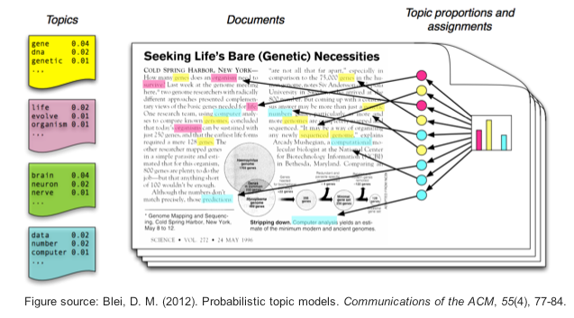 Un schéma explicatif est proposé par H. Naushan, en 2020.

6.2 Les données
data <- read_csv("data/data_trustpilot_oiseaux.csv")Rows: 4388 Columns: 7
── Column specification ────────────────────────────────────────────────────────
Delimiter: ","
chr (4): auteur, date, month, comments
dbl (3): id, year, note
ℹ Use `spec()` to retrieve the full column specification for this data.
ℹ Specify the column types or set `show_col_types = FALSE` to quiet this message.data<-data%>%mutate(text_id=paste0("text_", row_number(data$id)))6.3 Topics Analysis
6.3.1 Le modèle LDA avec topicmodels
On travaille à partir du dfm. On doit transformer le format des données afin de l’injecter dans le modèle. On réduit le nombre de termes considérés, ce qui permet de réduire les temps de calcul et de trouver une solution convergente.
Les résultats du modèle LDA sont très dépendants de la qualité du vocabulaire injecté. Plus on travaille ce vocabulaire, meilleurs sont les résultats. On va donc reprendre tout ce qu’on a fait jusqu’à présent pour améliorer les résultats de notre modèle : on récupère les annotations ; on filtre le vocabulaire pour ne garder que les noms, adjectifs et verbes ; on crée les collocations ; on filtre les occurrences trop et pas assez fréquentes.
ann_token<-read_rds("data/annotation_oiseaux.rds")
data<-ann_token%>%
filter(upos=="NOUN"|upos=="VERB"|upos=="ADJ"|upos=="ADV")%>%
group_by(doc_id)%>%
summarise(text=paste(lemma,collapse = " "))%>%
inner_join(data, join_by("doc_id"=="id"))
corpus_new<-corpus(data, text_field = "text")
toks<-tokens(corpus_new)%>%
tokens_replace(c("produire", "conformer","colir", "tre", "livrer", "n"), c("produit", "conforme","colis", "très", "livraison", "ne"))%>%
tokens_remove(c(".",","))
colloc<-textstat_collocations(toks, min_count = 10, tolower = TRUE)
toks<-tokens_compound(toks, pattern = colloc[colloc$z>7,])
dfm_new<-dfm(toks)%>%
dfm_trim(min_termfreq = 0.6, termfreq_type = "quantile",
max_docfreq = 0.1, docfreq_type = "prop")
dtm_new <- convert(dfm_new, to = "topicmodels")
set.seed(1234)
lda <- LDA(dtm_new, k = 5)
#On regarde les résultats
terms(lda,10) Topic 1 Topic 2 Topic 3 Topic 4
[1,] "très" "recommander" "livraison_rapide" "livraison"
[2,] "toujours" "livraison" "site" "très_bien"
[3,] "rapide" "avoir" "très" "commander"
[4,] "site" "site" "super" "recommander"
[5,] "livraison" "ne" "pas" "recevoir"
[6,] "recommander" "oiseau" "bien" "tout"
[7,] "recevoir" "commander" "commander" "pas"
[8,] "bien" "très" "très_satisfait" "bon"
[9,] "excellent" "trouver" "service" "perroquet"
[10,] "perroquet" "très_satisfait" "qualité" "bien"
Topic 5
[1,] "oiseau"
[2,] "avoir"
[3,] "plus"
[4,] "article"
[5,] "commander"
[6,] "pas"
[7,] "ne_pas"
[8,] "super"
[9,] "rapide"
[10,] "bon" # topics(lda)
corpus_new["996"]Corpus consisting of 1 document and 7 docvars.
996 :
"second commande satisfaction total expédition très rapide em..."corpus_new["995"]Corpus consisting of 1 document and 7 docvars.
995 :
"très bon produire livraison rapide sérieux recommander produ..."corpus_new["999"]Corpus consisting of 1 document and 7 docvars.
999 :
"très bon magasin emballage norme trouver besoin conseiller r..."term<-as_tibble(terms(lda,25))%>%
mutate(rank=as.numeric(row.names(.)))%>%
pivot_longer(-rank, names_to = "topic",values_to = "term")
ggplot(term, aes(x=topic, y= rank, group = term , label = term)) +
scale_y_reverse() +
geom_text(aes(color=topic,size=8/log(rank)))+
theme_minimal()+
scale_color_hue()+
guides(color="none",size="none")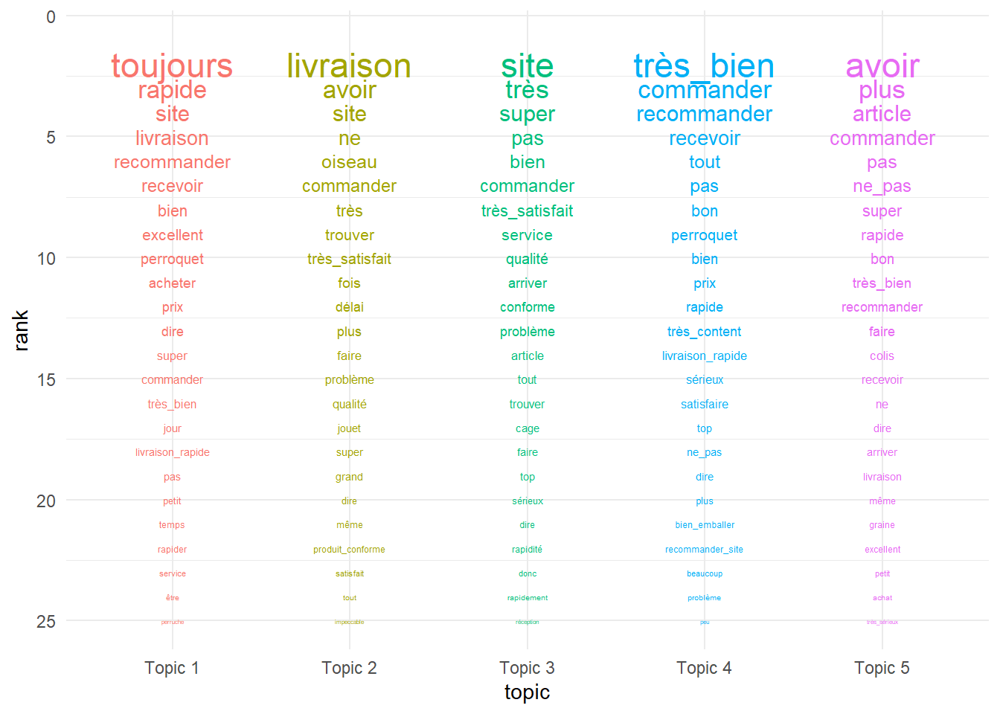
6.3.2 Déterminer le nombre de topics optimal
Le modèle LDA fonctionne à partir d’un nombre de topics donné. La question est donc de savoir quel est le nombre de topics optimal pour décrire notre corpus. Heureusement, des personnes ont créé des fonctions et des procédures pour nous aider dans cette quête. L’idée est de calculer différents modèles pour différents nombres de topics, et de comparer la qualité des résultats. La procédure ci-dessous est en deux parties :
Tout d’abord, on compare la qualité de différents indicateurs sur un grand nombre de modèles, pour aboutir à une liste de quelques solutions à comparer plus en détail (de 3 à 10).
Ensuite, on compare les résultats de la liste réduite de modèles, pour déterminer lequel a la meilleure distribution des topics entre les documents. La distribution recherchée est celle qui distingue le plus les documents en fonction des topics, tout en étant à droite de l’estimation d’une répartition uniforme des documents entre les topics. Le critère de parcimonie nous invite à choisir la solution avec le moins grand nombre de topics, en cas de résultats comparables.
##Etape 1 : les meilleures solutions
library(ldatuning)
library(magrittr)
Attachement du package : 'magrittr'L'objet suivant est masqué depuis 'package:purrr':
set_namesL'objet suivant est masqué depuis 'package:tidyr':
extractresult <- FindTopicsNumber(dtm_new,
topics = c(seq(from = 2, to = 9, by = 1), seq(10, 25, 5)),
metrics = c("Griffiths2004", "CaoJuan2009", "Arun2010", "Deveaud2014"),
method = "Gibbs",
control = list(seed = 0:4,
nstart = 5,
best = TRUE),
mc.cores = 4L,
verbose = TRUE
)fit models... done.
calculate metrics:
Griffiths2004... done.
CaoJuan2009... done.
Arun2010... done.
Deveaud2014... done.FindTopicsNumber_plot(result)Warning: The `<scale>` argument of `guides()` cannot be `FALSE`. Use "none" instead as
of ggplot2 3.3.4.
ℹ The deprecated feature was likely used in the ldatuning package.
Please report the issue at <https://github.com/nikita-moor/ldatuning/issues>.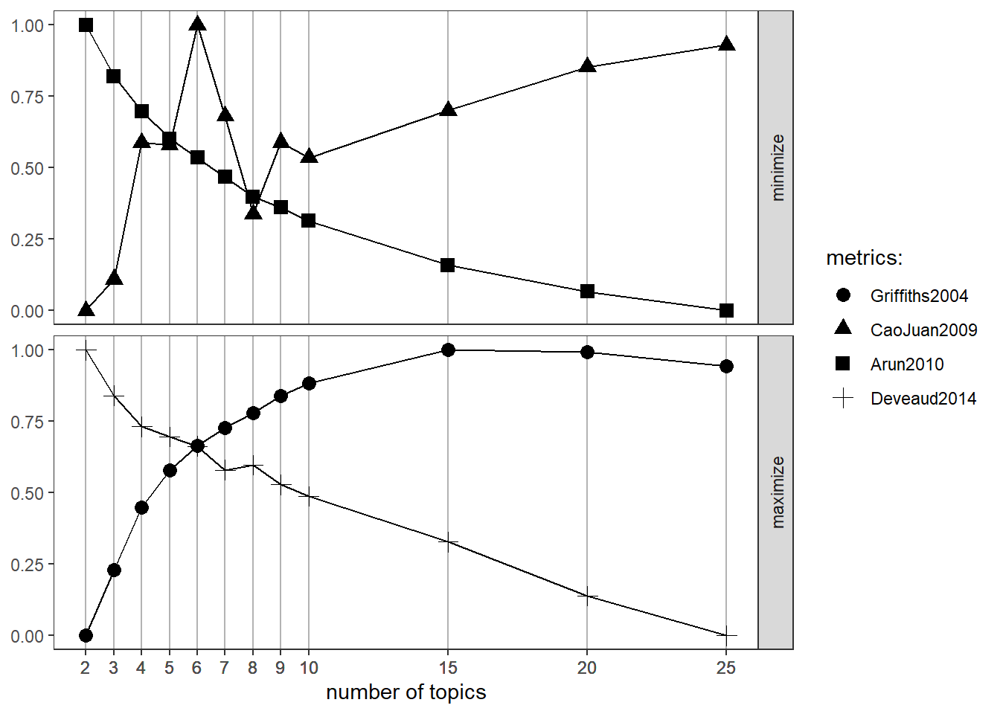
##Etape 2 : comparaison des solutions
para <- tibble(k = c(6,7,8,9,10))
lemma_tm <- para %>%
mutate(lda = map(k,
function(k) LDA(
k=k,
x=dtm_new,
method="Gibbs",
control=list(seed = 0:4,
nstart = 5,
best = TRUE)
)
)
)
lemma_tm <- lemma_tm %>%
mutate(lda_gamma = map(.x=lda,
.f=tidytext::tidy,
matrix="gamma"))
lemma_tm %>%
unnest(lda_gamma) %>%
group_by(k, document) %>%
arrange(desc(gamma)) %>%
slice(1) %>%
ungroup() %>%
ggplot(aes(x=gamma, fill=factor(k))) +
geom_histogram(bins = 20) +
scale_fill_discrete(name = "Number of\nTopics") +
xlab("maximum gamma per document") +
facet_wrap(~k) +
geom_vline(aes(xintercept = 1/k),
tibble(k=lemma_tm %$% unique(k)),
color="darkred")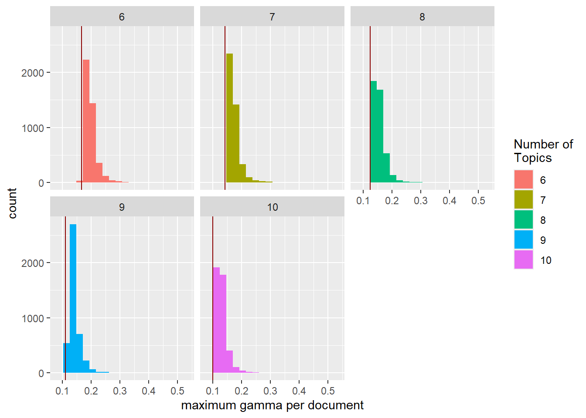
6.3.3 Représentation graphique
À partir de la solution retenue aux étapes précédentes, on va représenter les différents topics :
set.seed(1234) #pour la réplicabilité des résultats
lda <- LDA(dtm_new, k = 7)
lda_res<-as.data.frame(terms(lda, 25))%>%
rename(nom1='Topic 1',nom2='Topic 2', nom3='Topic 3', nom4='Topic 4', nom5='Topic 5',nom6='Topic 6',nom7='Topic 7')%>%
mutate(rank=as.numeric(row.names(.)))%>%
pivot_longer(-rank, names_to = "topic", values_to = "term")
ggplot(lda_res, aes(x=topic, y= rank, group = term , label = term)) +
scale_y_reverse() +
geom_text(aes(color=topic,size=8/log(rank)))+
theme_minimal()+
scale_color_hue()+
guides(color=FALSE,size=FALSE)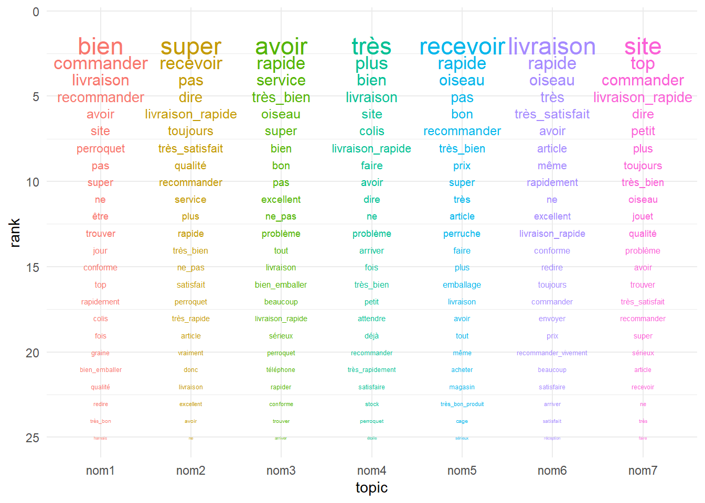
6.4 Theory-Driven LDA
Ici, on va forcer les topics grâce à la réalisation d’un dictionnaire. C’est utile quand on cherche à appliquer une théorie qui nous dit ce que l’on cherche à trouver. Par exemple, ici on s’intéresse aux attributs clés des logements oiseaux. Dans d’autre cas, on pourra chercher à expliquer les notes en fonction de topics qui reflètent les attributs clés. On peut réaliser le dictionnaire a priori ou après différentes analyses de topics, de co-occurences, de fréquence, etc.
On commence par créer un dictionnaire.
dict<-dictionary(list(produit=c("produit*", "cage","oiseau","graine*"),
livraison=c("livr*","recepti*","délai"),
commande=c("command*","emballage","envoi*"),
site="*site*",
prix=c("*prix*","frais_port")
))
dictDictionary object with 5 key entries.
- [produit]:
- produit*, cage, oiseau, graine*
- [livraison]:
- livr*, recepti*, délai
- [commande]:
- command*, emballage, envoi*
- [site]:
- *site*
- [prix]:
- *prix*, frais_porthead(dfm_lookup(dfm_new,dict))Document-feature matrix of: 6 documents, 5 features (76.67% sparse) and 7 docvars.
features
docs produit livraison commande site prix
1 0 0 0 0 0
2 0 2 1 0 0
3 2 1 0 0 0
4 0 0 1 0 0
5 0 1 0 0 0
6 0 0 0 1 0On utilise ensuite le package ‘seededlda’ pour lancer le modèle semi-supervisé.
library(seededlda)Le chargement a nécessité le package : proxyC
Attachement du package : 'proxyC'L'objet suivant est masqué depuis 'package:stats':
dist
Attachement du package : 'seededlda'Les objets suivants sont masqués depuis 'package:topicmodels':
terms, topicsL'objet suivant est masqué depuis 'package:stats':
termsset.seed(1234)
slda<-textmodel_seededlda(dfm_new, dict, residual = T)
terms(slda,20) produit livraison commande
[1,] "oiseau" "livraison" "commander"
[2,] "cage" "livraison_rapide" "emballage"
[3,] "graine" "délai" "envoi"
[4,] "perroquet" "conforme" "envoi_rapide"
[5,] "très" "livraison_très_rapide" "recevoir"
[6,] "trouver" "dire" "arriver"
[7,] "bien" "satisfaire" "bien"
[8,] "petit" "livraison_temps" "bien_emballer"
[9,] "plus" "impeccable" "très_rapidement"
[10,] "produit_qualité" "toujours" "toujours"
[11,] "produit_conforme" "très_bien" "recommander"
[12,] "avoir" "livraison_rapide_produit" "très_satisfait"
[13,] "jouet" "correspondre" "commande_livraison"
[14,] "acheter" "top" "envoi_très_rapide"
[15,] "beaucoup" "service" "envoie"
[16,] "harnais" "bien" "problème"
[17,] "perruche" "livreur" "rapidement"
[18,] "aussi" "livraison_rapidement" "bon_état"
[19,] "grand" "livraison_délai" "colis"
[20,] "faire" "attente" "rapidité"
site prix other
[1,] "site" "prix" "pas"
[2,] "très" "rapide" "ne"
[3,] "recommander" "très_bien" "avoir"
[4,] "très_bon_site" "recommander" "plus"
[5,] "recommander_site" "super" "ne_pas"
[6,] "super" "bon" "faire"
[7,] "rapide" "frais_port" "recevoir"
[8,] "tout" "excellent" "colis"
[9,] "siter" "très_rapide" "donc"
[10,] "site_sérieux" "très_satisfait" "fois"
[11,] "vraiment" "service" "jour"
[12,] "recommander_vivement" "très_bon_produit" "même"
[13,] "très_sérieux" "très_bon" "envoyer"
[14,] "bon_site" "sérieux" "attendre"
[15,] "super_site" "bon_produit" "autre"
[16,] "top" "rapider" "problème"
[17,] "conseiller" "prix_raisonnable" "pouvoir"
[18,] "équipe" "dire" "aller"
[19,] "téléphone" "expédition" "mettre"
[20,] "service_client" "qualité" "être" 6.4.1 Expliquer les notes en fonction des topics
Maintenant, nous cherchons à voir la répartition des topics dans les notes, pour comprendre si certains topics contribuent plus ou moins à la satisfaction.
theta<-as.data.frame(slda$theta)%>%mutate(doc_id=as.numeric(row.names(.)))
data<-inner_join(data, theta)Joining with `by = join_by(doc_id)`foo<-data%>%select(note, produit, livraison, commande, site,prix, other)%>%
pivot_longer(-note, names_to = "topic", values_to = "value")
ggplot(foo,aes(x=note, y=value, group=topic))+
geom_bar(position="fill",stat="identity", aes(fill=topic))+
scale_fill_brewer(palette="Spectral")+
theme_minimal()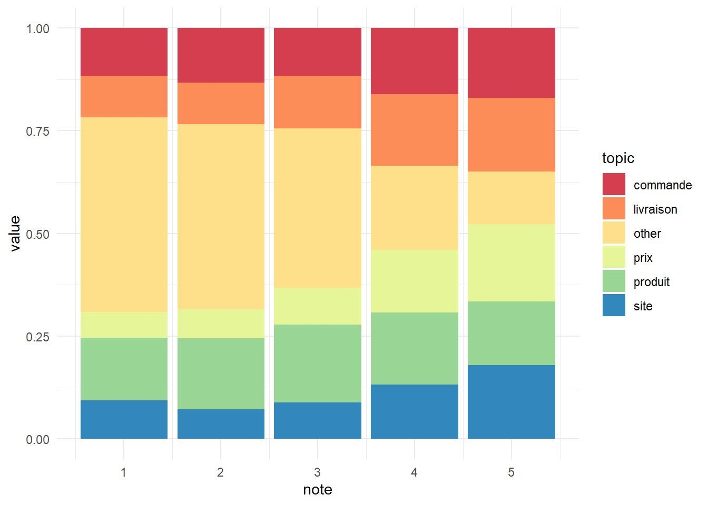
#Pour finir, une petite régression !
fit<-lm(note~produit+livraison+commande+site+prix, data =data)
summary(fit)
Call:
lm(formula = note ~ produit + livraison + commande + site + prix,
data = data)
Residuals:
Min 1Q Median 3Q Max
-3.9666 -0.0424 0.1259 0.2685 2.0844
Coefficients:
Estimate Std. Error t value Pr(>|t|)
(Intercept) 2.27633 0.05989 38.01 <2e-16 ***
produit 2.29956 0.09840 23.37 <2e-16 ***
livraison 2.81963 0.09325 30.24 <2e-16 ***
commande 2.76466 0.09576 28.87 <2e-16 ***
site 3.10423 0.09272 33.48 <2e-16 ***
prix 3.07552 0.08923 34.47 <2e-16 ***
---
Signif. codes: 0 '***' 0.001 '**' 0.01 '*' 0.05 '.' 0.1 ' ' 1
Residual standard error: 0.7103 on 4332 degrees of freedom
Multiple R-squared: 0.2926, Adjusted R-squared: 0.2917
F-statistic: 358.3 on 5 and 4332 DF, p-value: < 2.2e-166.5 Le modèle STM
La Modélisation Thématique Structurelle est un prolongement du modèle LDA développé ci-dessus. Permettant de parvenir aux mêmes types de résultats de regroupements thématiques par plongement lexical, cette dernière se distingue dans le sens où elle permet d’associer d’autres variables, ou méta-données, au corpus traité afin de prendre en compte les relations de leurs modalités au contenu. Ainsi, elle crée la notion de prévalence d’un topic, qui permet de prendre en compte sa fluctuation en fonction de la propre évolution de la covariance des éléments d’un même mélange.

6.5.1 Choisir le nombre de topics : approche par comparaison
Tout d’abord, on teste plusieurs modèles pour découvrir le nombre de topics optimal. 4 métriques sont calculés : * held-out likelihood : la probabilité d’apparition des mots au sein d’un document après avoir enlevé ces mots du document lors de l’étape d’estimation (à maximiser) ; * residuals : test de la sur-dispersion des résidus ; si les résidus sont sur-dispersés, il est possible qu’il existe une meilleure solution à plus de topics (à minimiser) ; * semantic coherence : la cohérence sémantique est maximisée quand les mots les plus probables d’un topic apparaissent fréquemment ensemble (o-occurrences) (à maximiser) ; * lower bound : permet de suivre la convergence du modèle (à minimiser).
On lance l’estimation sur 3 modèles différents, puis on compare les métriques.
dfm_stm <- convert(dfm_new, to = "stm")Warning in dfm2stm(x, docvars, omit_empty = TRUE): Dropped 4,338 empty
document(s)library(stm)stm v1.3.7 successfully loaded. See ?stm for help.
Papers, resources, and other materials at structuraltopicmodel.com#test de différents modèles
kresult2 <- searchK(dfm_stm$documents, dfm_stm$vocab, K = c(7,10,25), prevalence =~ s(note), data = dfm_stm$meta,verbose = FALSE)Warning in splines::bs(x, df, ...): all interior knots match right boundary
knotWarning in splines::bs(x, df, ...): all interior knots match right boundary
knot
Warning in splines::bs(x, df, ...): all interior knots match right boundary
knot#afficher les paramètres calculés
plot(kresult2)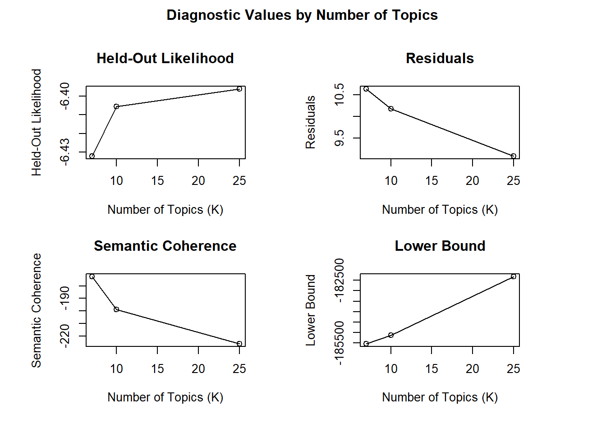
6.5.2 Le modèle final
Une fois le nombre de topics choisi, il ne reste plus qu’à lancer le modèle et interpréter ses résultats. L’interprétation passe par 3 étapes: * interpréter les topics, * regarder la prévalence des topics en fonction des variables de prévalence retenues, * analyser la corrélation entre les topics
Nous testons ici une solution à 10 topics. Tout d’abord, nous lançons le modèle et nous regardons la distribution des topics en fonction de leur cohérence sémantique et de leur exclusivité (à partir de la mesure FREX).
#nb de topics retenu
k=10
# la spécification du modèle
set.seed(2020)
model.stm <- stm(dfm_stm$documents,
dfm_stm$vocab,
K = k, max.em.its = 25,
data = dfm_stm$meta,
init.type = "Spectral",
prevalence =~ note,
interactions = FALSE,
verbose = FALSE) # this is the actual stm call
#la qualité des topic
topicQuality(model.stm , dfm_stm$documents, xlab = "Semantic Coherence", ylab = "Exclusivity", M = k) [1] -189.2462 -189.5355 -205.9539 -170.8214 -186.9341 -163.6631 -196.4798
[8] -249.0770 -211.9196 -194.3200
[1] 9.835226 9.789158 9.784484 9.802718 9.759080 9.671072 9.790776 9.800144
[9] 9.668600 9.777661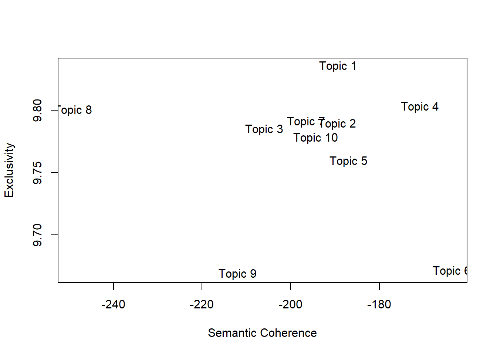
6.5.3 Interpréter les topics
La première étape de l’exploration consiste à analyser les mots les plus associés à chaque topics. Il existe 4 métriques d’association différentes : * Highest Prob : les mots avec la plus forte probabilité ; * FREX : pondération des mots selon leur fréquence d’apparition globale et leur appartenance à des documents spécifiques ; * Lift : pondération par l’occurrence des mots dans les autres topics, ce qui donne plus d’importance aux mots spécifiques au topic examiné ; * Score : transformation de Lift par le log.
Ici, on affiche les résultats pour les topics 1, 5 et 10 et on représente les différentes métriques graphiquement :
labelTopics(model.stm, c(1,5,10))Topic 1 Top Words:
Highest Prob: site, super, top, petit, tout, très_bon, rapidité
FREX: site, satisfait, équipe, rapidité, très_bon, livraison_rapidement, correct
Lift: réaction, livraison_très_vite, envoi_rapide_produit_qualité, féliciter, livraison_rapidement, livraison_rapide_recommander, situation
Score: site, super, top, rapidité, petit, très_bon, satisfait
Topic 5 Top Words:
Highest Prob: dire, vraiment, envoyer, recommander_site, magasin, grand, choix
FREX: dire, envoyer, vraiment, boutique, choix, envoi_rapide_soigné, point
Lift: amie, écossais, hybride, pack, terme, très_bon_prestation, front
Score: dire, envoyer, vraiment, recommander_site, choix, magasin, grand
Topic 10 Top Words:
Highest Prob: oiseau, pas, plus, très_satisfait, problème, excellent, arriver
FREX: très_satisfait, efficace, excellent, très_bon_qualité, demander, coli, envoie
Lift: fou, étrangler, nid, très_satisfait, ador, beaucoup_choix_produit, livraison_rapide_colis_bien_emballer
Score: oiseau, plus, pas, très_satisfait, excellent, problème, arriver plot(model.stm, type = "summary", labeltype="prob",text.cex = 0.7,n=7)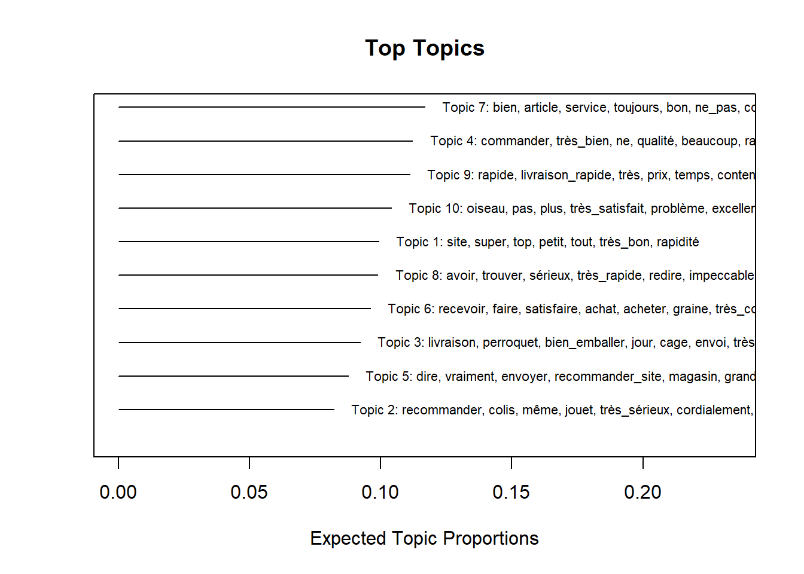
plot(model.stm, type = "summary", labeltype="score",text.cex = 0.7,n=5)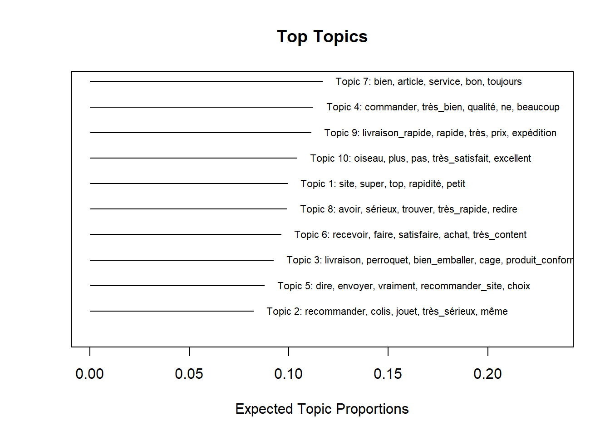
plot(model.stm, type = "summary", labeltype="lift",text.cex = 0.7,n=5)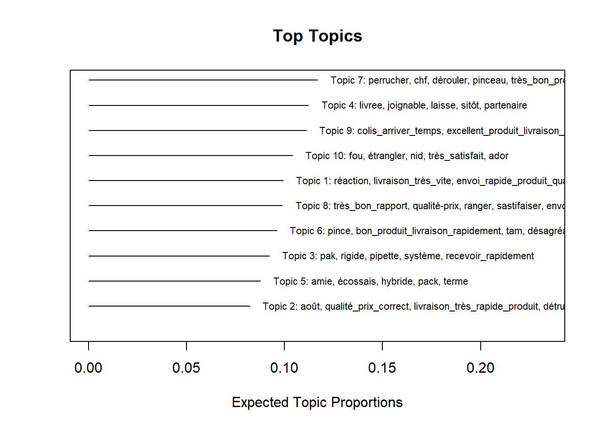
plot(model.stm, type = "summary", labeltype="frex",text.cex = 0.7,n=5)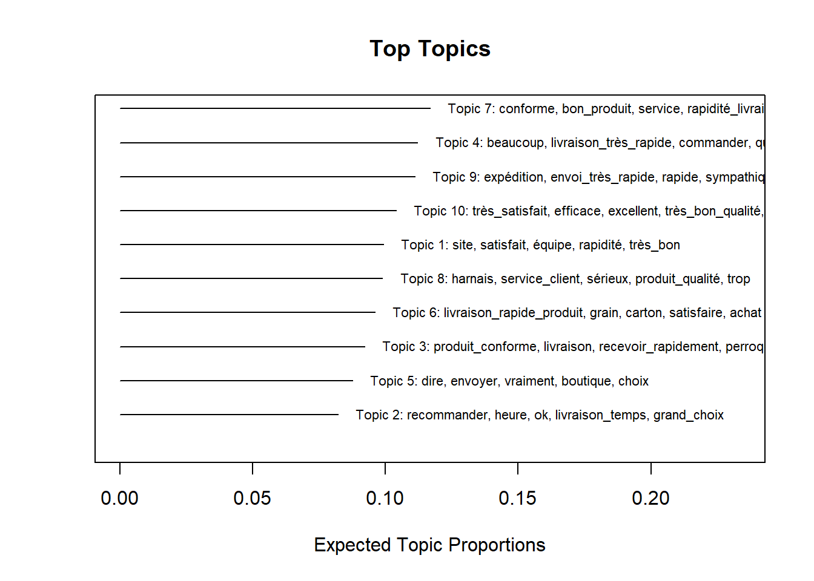
On peut également représenter les topics sous forme de nuage de mots. La première proposition, ci-dessous en bleu, repose sur la probabilité d’appartenance des termes aux topics, la seconde, en rouge, représente les mots en fonction de l’occurrence des topics dans les documents.
par(mfrow = c(3,5) , mar = c(0,0,0,0))
for (i in seq_along((1:k)))
{
cloud(model.stm,scale=c(2,.25) ,topic = i, type ="model", max.words = 50, colors="darkblue", random.order=FALSE, )
text(x=0.5, y=1, paste0("topic",i))
}Warning in wordcloud::wordcloud(words = vocab, freq = vec, max.words =
max.words, : recommander could not be fit on page. It will not be plotted.Warning in wordcloud::wordcloud(words = vocab, freq = vec, max.words =
max.words, : très_bien could not be fit on page. It will not be plotted.Warning in wordcloud::wordcloud(words = vocab, freq = vec, max.words =
max.words, : livraison_rapide could not be fit on page. It will not be plotted.par(mfrow = c(3,5) , mar = c(0,0,0,0))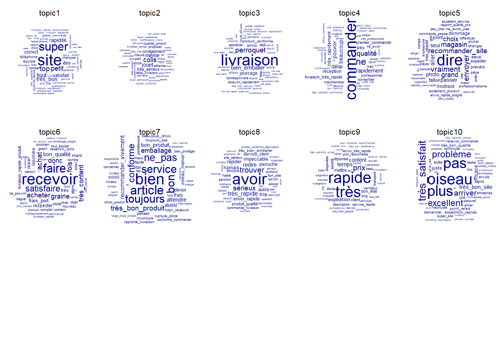
for (i in seq_along((1:k)))
{
cloud(model.stm, topic = i,scale=c(2,.25) ,type = c("model","documents"), dfm,thresh = 0.1, max.words = 50, colors="firebrick")
text(x=0.5, y=1, paste0("topic",i))
}Warning in wordcloud::wordcloud(words = vocab, freq = vec, max.words =
max.words, : recommander could not be fit on page. It will not be plotted.Warning in wordcloud::wordcloud(words = vocab, freq = vec, max.words =
max.words, : service could not be fit on page. It will not be plotted.Warning in wordcloud::wordcloud(words = vocab, freq = vec, max.words =
max.words, : livraison_rapide could not be fit on page. It will not be plotted.Warning in wordcloud::wordcloud(words = vocab, freq = vec, max.words =
max.words, : oiseau could not be fit on page. It will not be plotted.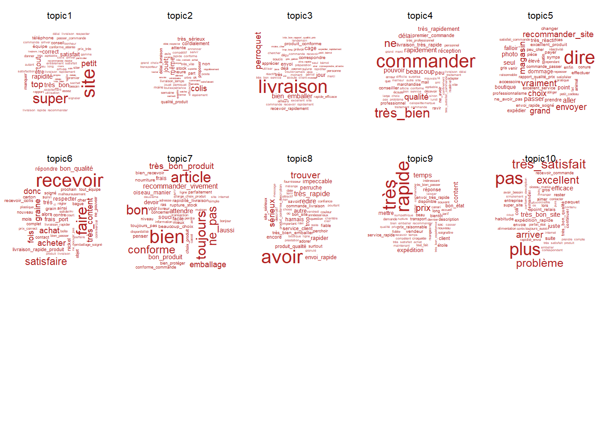
On peut aussi s’intéresser à représenter les contrastes dans les topics :
plot(model.stm, type="perspectives", topics=c(5,10))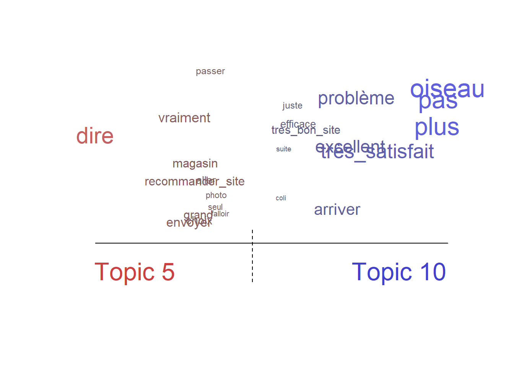
Enfin, on peut s’intéresser aux documents qui contribuent aux topics, à travers la fonction ‘findThoughts’, et à les représenter graphiquement. Pour cela, on a besoin d’un vecteur contenant les textes, dans le même ordre que celui fournit au modèle STM. Ici, on utilise le vecteur ‘title’ créé dans les premières manipulations des données.
data_stm<-data%>%filter(text_id%in%dfm_stm$meta$text_id)
thoughts3 <- findThoughts(model.stm,texts=data_stm$comments ,n = 4,
topics = 3)$docs[[1]]
thoughts10 <- findThoughts(model.stm, texts = data_stm$comments, n = 3,
topics = 10)$docs[[1]]
par(mfrow = c(1, 2), mar = c(0.5, 0.5, 1, 0.5))
plotQuote(thoughts3, width = 50,text.cex = 0.8, main = "Topic 3")
plotQuote(thoughts10, width = 50,text.cex = 0.8, main = "Topic 10")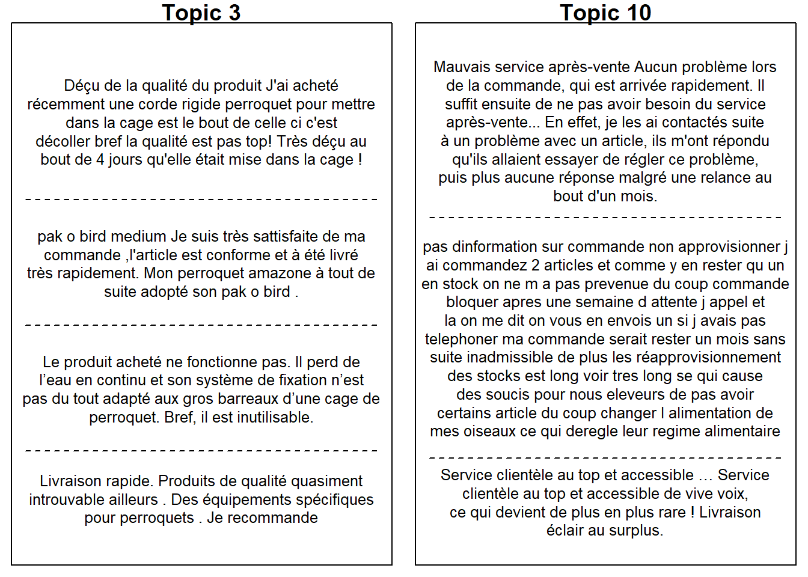
6.5.4 Evolution en fonction de la variable de prévalence
Ici, on représente l’évolution de la présence des topics en fonction de notre variable de prévalence, l’année de parution. D’abord, on calcule l’effet de l’année pour chaque topic, et ensuite on fait notre représentation graphique.
model.stm.labels <- labelTopics(model.stm, 1:k) #on récupère la description des topics pour les titres des graphiques
dfm_stm$meta$datum <- as.numeric(dfm_stm$meta$note) #on transforme l'année en variable continue
model.stm.ee <- estimateEffect(1:k ~ s(`datum`), model.stm, meta = dfm_stm$meta) #on estime l'effet de l'année pour chaque topicWarning in splines::bs(x, df, ...): all interior knots match right boundary
knot
Warning in splines::bs(x, df, ...): all interior knots match right boundary
knotWarning in estimateEffect(1:k ~ s(datum), model.stm, meta = dfm_stm$meta): Covariate matrix is singular. See the details of ?estimateEffect() for some common causes.
Adding a small prior 1e-5 for numerical stability.summary(model.stm.ee,topics=3) #résultat pour le topic 13
Call:
estimateEffect(formula = 1:k ~ s(datum), stmobj = model.stm,
metadata = dfm_stm$meta)
Topic 3:
Coefficients:
Estimate Std. Error t value Pr(>|t|)
(Intercept) 0.122366 0.008090 15.126 < 2e-16 ***
s(datum)1 0.001979 0.026834 0.074 0.941
s(datum)2 -0.021155 0.014258 -1.484 0.138
s(datum)3 -0.032226 0.008235 -3.913 9.25e-05 ***
s(datum)4 -0.017980 19.940092 -0.001 0.999
---
Signif. codes: 0 '***' 0.001 '**' 0.01 '*' 0.05 '.' 0.1 ' ' 1#représentation graphique
par(mfrow = c(3,5) , mar = c(1,0,2,0))
for (i in seq_along((1:k)))
{
plot(model.stm.ee, "datum", method = "continuous", topics = i, main = paste0(model.stm.labels$score[i,1:4], collapse = "-"), printlegend = T)
}Warning in splines::bs(x, df, ...): all interior knots match right boundary
knotWarning in splines::bs(x, df, ...): all interior knots match right boundary
knot
Warning in splines::bs(x, df, ...): all interior knots match right boundary
knot
Warning in splines::bs(x, df, ...): all interior knots match right boundary
knot
Warning in splines::bs(x, df, ...): all interior knots match right boundary
knot
Warning in splines::bs(x, df, ...): all interior knots match right boundary
knot
Warning in splines::bs(x, df, ...): all interior knots match right boundary
knot
Warning in splines::bs(x, df, ...): all interior knots match right boundary
knot
Warning in splines::bs(x, df, ...): all interior knots match right boundary
knot
Warning in splines::bs(x, df, ...): all interior knots match right boundary
knot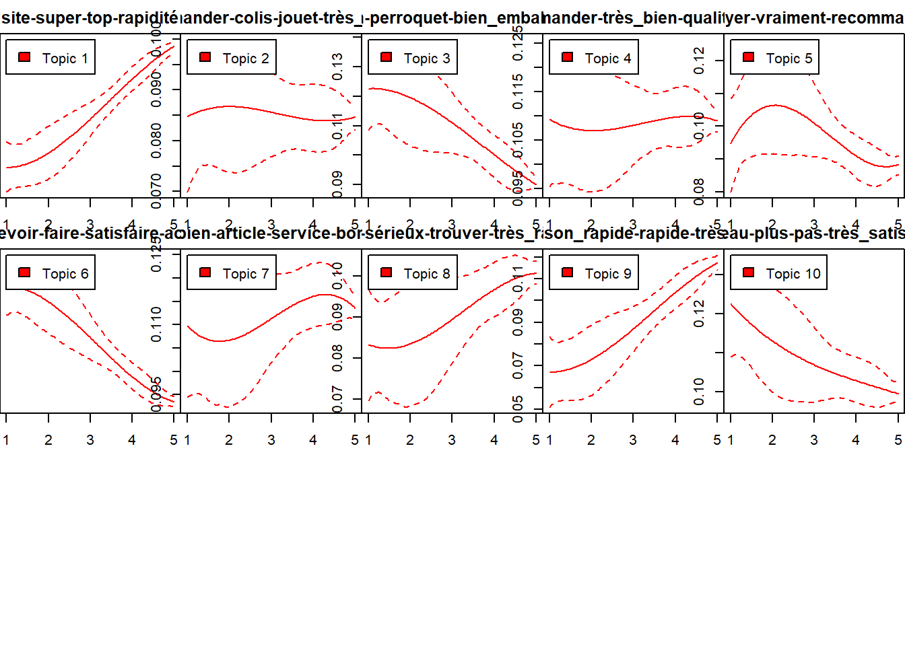
6.5.5 Corrélation entre les topics
Pour finir, on s’intéresse à la corrélation entre les topics.
library(reshape2)
Attachement du package : 'reshape2'L'objet suivant est masqué depuis 'package:tidyr':
smiths#On crée les titres/noms des topics
b<-NULL
for (i in seq_along((1:k)))
{
a<-paste0(model.stm.labels$score[i,1:3], collapse = " ")
a<-paste("Topic",i,a)
b<-rbind(b,a)
}
label<-as.data.frame(b)
label V1
a Topic 1 site super top
a.1 Topic 2 recommander colis jouet
a.2 Topic 3 livraison perroquet bien_emballer
a.3 Topic 4 commander très_bien qualité
a.4 Topic 5 dire envoyer vraiment
a.5 Topic 6 recevoir faire satisfaire
a.6 Topic 7 bien article service
a.7 Topic 8 avoir sérieux trouver
a.8 Topic 9 livraison_rapide rapide très
a.9 Topic 10 oiseau plus pastopicor<-topicCorr(model.stm, method = "simple",verbose = TRUE) # calcul des corrélations
adjmatrix <-topicor[[3]] #on récupère les corrélations
#calcul des theta moyens par topic
theta <-model.stm[[7]]
thetat<-melt(theta)
thetat<-thetat %>%group_by(Var2)%>%summarise(mean=mean(value))
library(igraph)
Attachement du package : 'igraph'L'objet suivant est masqué depuis 'package:seededlda':
sizesL'objet suivant est masqué depuis 'package:quanteda.textplots':
as.igraphLes objets suivants sont masqués depuis 'package:lubridate':
%--%, unionLes objets suivants sont masqués depuis 'package:dplyr':
as_data_frame, groups, unionLes objets suivants sont masqués depuis 'package:purrr':
compose, simplifyL'objet suivant est masqué depuis 'package:tidyr':
crossingL'objet suivant est masqué depuis 'package:tibble':
as_data_frameLes objets suivants sont masqués depuis 'package:stats':
decompose, spectrumL'objet suivant est masqué depuis 'package:base':
union#création du graphe des corrélations
g<-graph_from_adjacency_matrix(adjmatrix, mode = "lower", weighted = TRUE, diag = FALSE)
g <- delete.edges(g, E(g)[ abs(weight) < 0.05])Warning: `delete.edges()` was deprecated in igraph 2.0.0.
ℹ Please use `delete_edges()` instead.curve_multiple(g) [1] 0 0 0 0 0 0 0 0 0 0 0 0 0 0 0 0 0 0 0 0 0 0 0 0 0 0 0 0 0 0 0 0 0 0 0 0 0 0
[39] 0set.seed(2021)
plot(g,
# layout=layout_with_fr,
margin = c(0, 0, 0, 0),
edge.width=abs(E(g)$weight)*15,
edge.color=ifelse(E(g)$weight > 0, "grey60","red"),
vertex.label=label$V1,
vertex.color = adjustcolor("pink2", alpha.f = .2),vertex.label.cex=0.7, vertex.size=400*thetat$mean, vertex.frame.color= "white"
)Warning in v(graph): Non-positive edge weight found, ignoring all weights
during graph layout.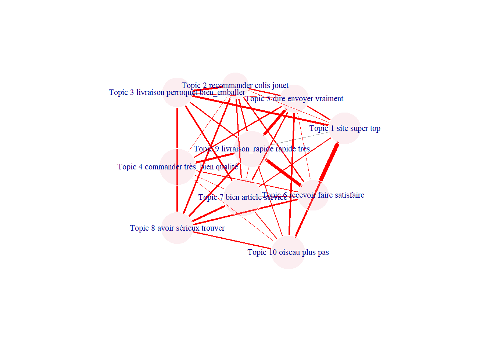
Et en bonus, un petit graphique pour représenter les mots les plus contributifs aux topics :
library(broom)
td_beta <- tidy(model.stm,log=FALSE)
td_beta<-td_beta %>%
mutate(topic=as.factor(topic))%>%
mutate(topic=`levels<-.factor`(td_beta$topic,label$V1))
td_beta %>%
group_by(topic) %>%
top_n(15, beta) %>%
ungroup() %>%
ggplot(aes(reorder(term,beta), beta)) +
geom_col(fill="firebrick") +theme_minimal()+
facet_wrap(~ topic, scales = "free") + labs(x=NULL)+
coord_flip()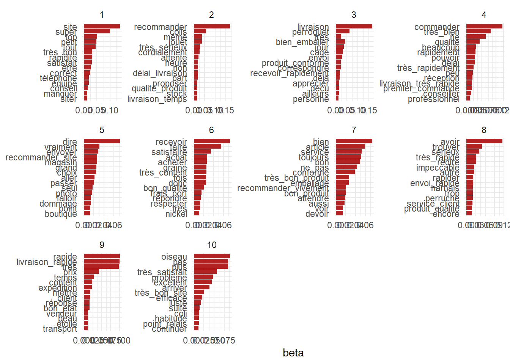